A Zapier agent that emails me Singapore's official air quality (24-hour PSI and PM2.5 for five regions) and the weather four times a day, at 00:00, 06:00, 12:00 and 18:00 SGT. All data comes from NEA's public feeds on data.gov.sg.
My agent card | SG PSI & Weather Update | finished Tue 20 Oct 2026, 01:25 SGT (v3) 1. The job: Emails a Singapore commuter (me, a student going to SMU) the official 24-hour PSI and PM2.5 for North, South, East, West and Central, plus the current temperature and the 6-hour forecast, so I know whether to wear a mask or carry an umbrella. 2. The trigger: Schedule by Zapier "Every Hour" (Asia/Singapore). A filter lets only the 00:00, 06:00, 12:00 and 18:00 runs continue. 3. The tools: Schedule by Zapier (trigger). Filter by Zapier. Code by Zapier (JavaScript that only reads three public NEA endpoints on data.gov.sg: psi, twenty-four-hr-forecast, air-temperature). Email by Zapier: Send Outbound Email (to me only). 4. It must never: email anyone but me. The "To" field is typed in as my own address, never mapped from data, and CC and BCC are left empty. 5. Where a person checks: I (the student) read each email when it arrives. Once a day I confirm the Zap is still on, scan Zap history for anything Errored, and compare one email with NEA's figure for the same hour, until I turn the Zap off after class on Wed 21 Oct.
Two things I should be upfront about. First, I only wrote this agent card on 20 Oct, after I had built the Zap, so it was not written before the first run as the brief asks. Second, the brief asks for one trigger and one action on the free plan, but my Zap has four steps: Zapier's schedule cannot do "every 6 hours", so I needed a filter, and an email step cannot fetch data on its own, so I needed a code step. These extra steps only work on Zapier's free trial (the editor warns that the Zap "uses paid features"). My earlier attempt that did follow the rules, SG Weather Watch (RSS → Gmail), never ran once, so I am handing in this agent instead.
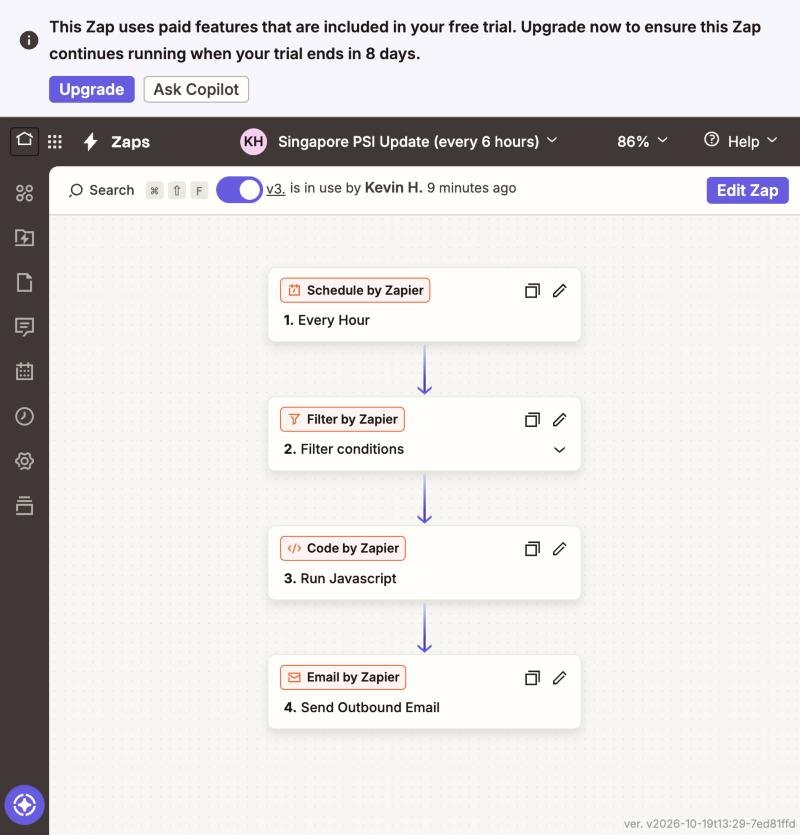
| Version | Published (SGT) | What changed |
|---|---|---|
| v1 | Wed 14 Oct, ~15:00 | PSI for five regions, every 6 hours. |
| v2 "Add Singapore weather" | Tue 20 Oct, 00:46 | Adds current temperature, the 24-hour outlook and the 6-hour regional forecast. |
| v3 "Fix: send email even when PSI data missing" | Tue 20 Oct, 01:25 | The fix from the tricky case (below). |
From the first scheduled run (Wed 14 Oct, 18:00) to Tue 20 Oct, 15:00 SGT, Zap history holds 24 scheduled emails, exactly the number expected. Every other hourly run is Filtered, stopped on purpose by the filter, and the only Errored run is my deliberate tricky-case test (below). No scheduled run has failed.
For five scheduled runs I compared every number in the email (PSI and PM2.5 for five regions) with NEA's own record for the same hour, which I fetched separately from data.gov.sg.
| Run (SGT) | Zap history | Reading in the email | Highest PSI | vs NEA record |
|---|---|---|---|---|
| Mon 19 Oct, 12:00 | Successful, 2 tasks | 12:00 pm | 122 West (Unhealthy) | 10 of 10 match |
| Mon 19 Oct, 18:00 | Successful, 2 tasks | 6:00 pm | 114 West (Unhealthy) | 10 of 10 match |
| Tue 20 Oct, 00:00 | Successful, 2 tasks | 11:00 pm (19 Oct) | 115 West (Unhealthy) | 10 of 10 match |
| Tue 20 Oct, 06:00 | Successful, 2 tasks | 5:00 am | 122 West (Unhealthy) · 28.6°C, thundery showers | 10 of 10 match |
| Tue 20 Oct, 12:00 | Successful, 2 tasks | 11:00 am | 128 West (Unhealthy) · 31.2°C, thundery showers | 10 of 10 match |
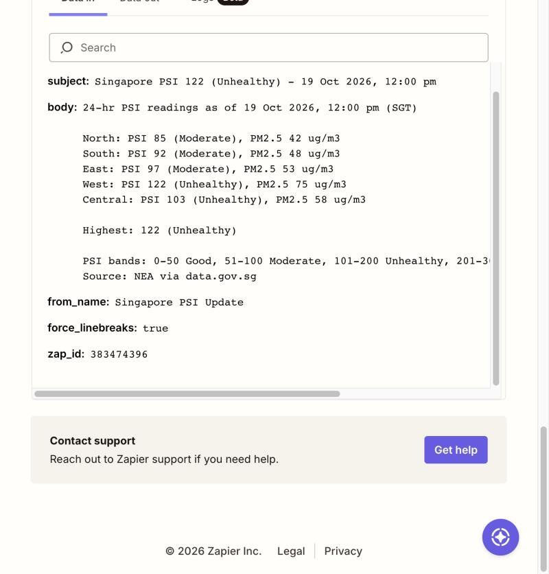
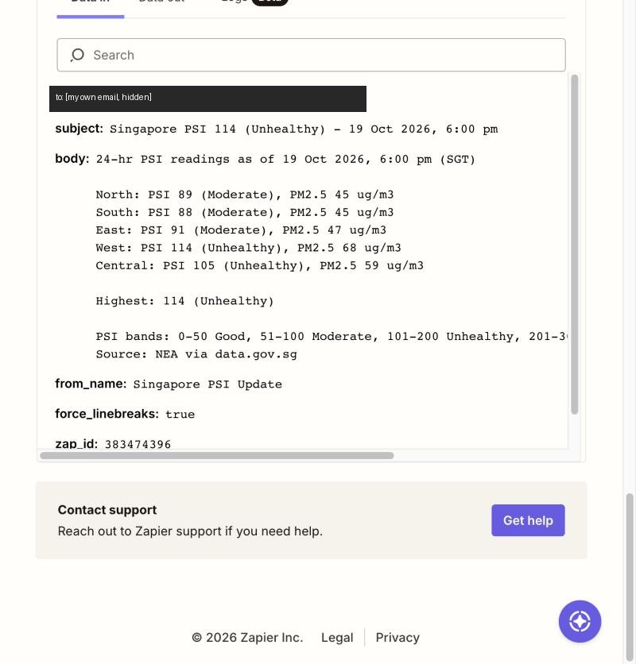
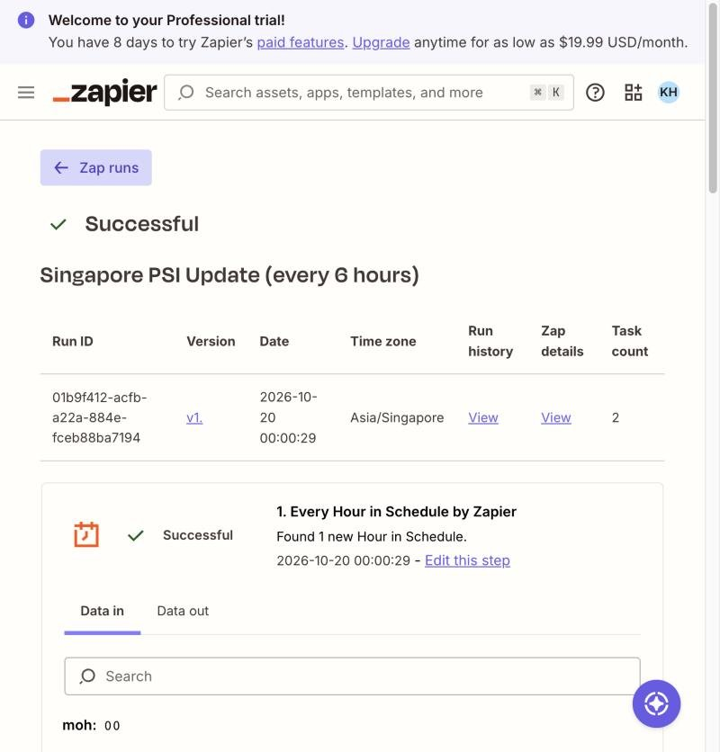
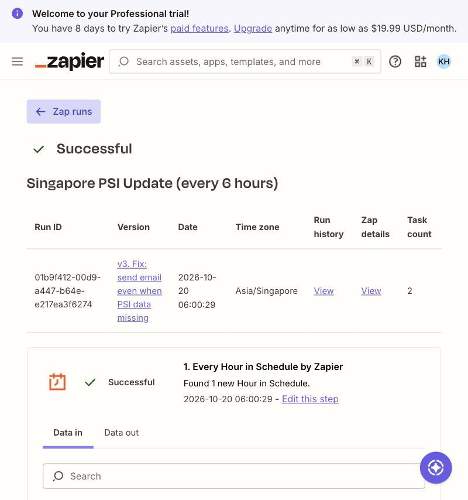
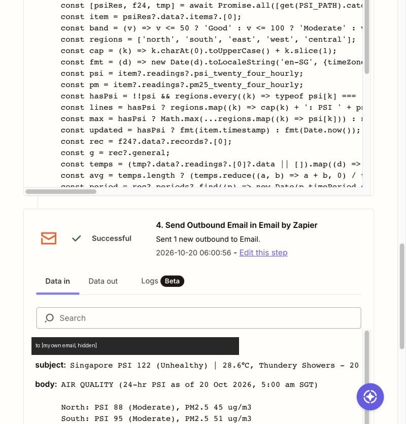
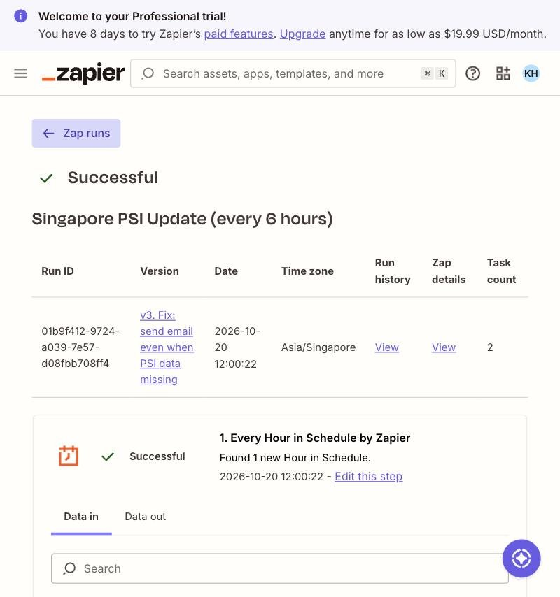
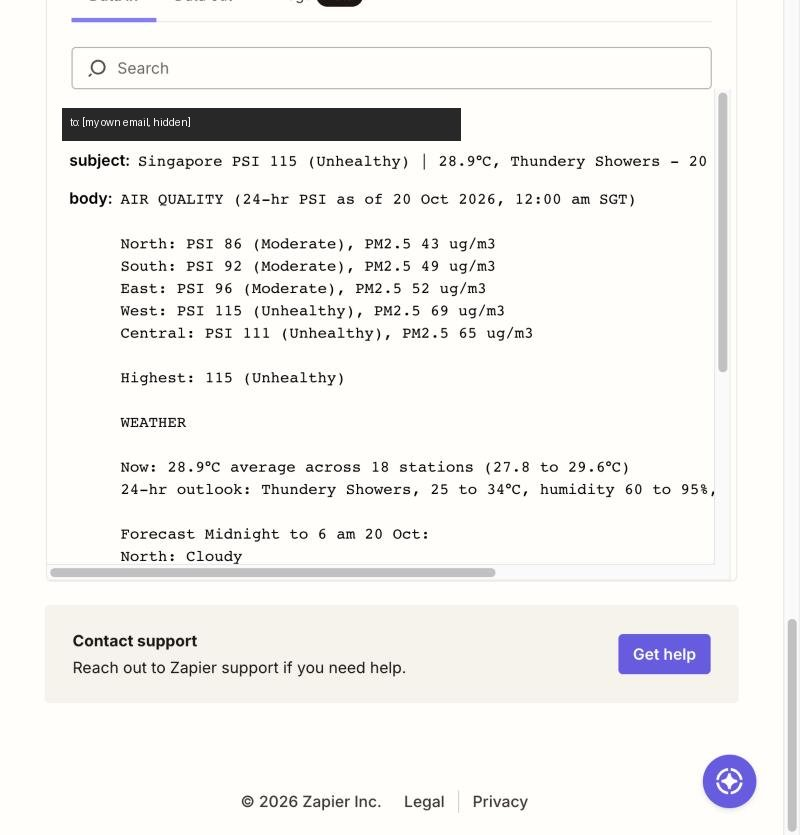
When data.gov.sg has no PSI data for the time asked, it does not send an empty list. It answers {"code":17, "name":"REAL_TIME_API_DATA_NOT_FOUND", "data":null}. I simulated this by asking for a date with no data (psi?date=2030-01-01) in a draft of the Zap, so the live Zap was never touched.
psiRes.data.items[0] with no guard, so it should throw a TypeError ("Cannot read properties of null").Exactly as expected: Errored at step 3 with TypeError: Cannot read properties of null (reading 'items') at line 3, and step 4 Skipped. No email was sent. In real use I would get silence, and only Zap history would show why.
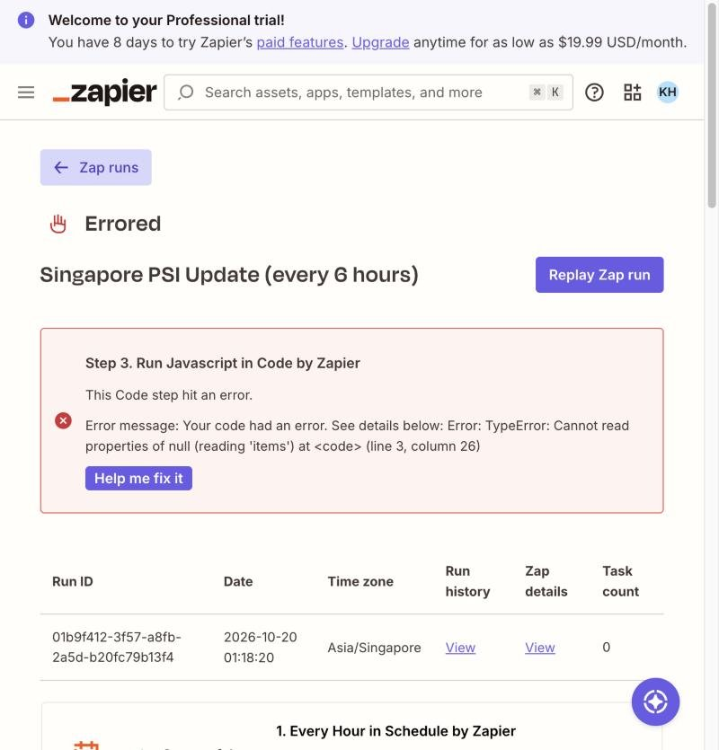
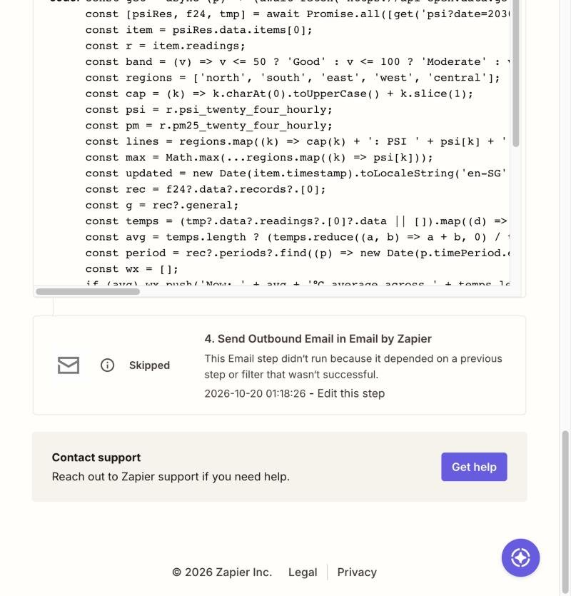
.catch(() => null) and is read with optional chaining (psiRes?.data?.items?.[0]), so a missing or broken feed cannot crash the step.hasPsi check confirms all five regions have numbers. If not, the email still goes out with the subject "Singapore PSI unavailable", NEA's own message ("Data not found") and the full weather section.PSI_PATH line, so the case can be replayed by changing that one line.Successful, all four steps. The email arrived with the subject "Singapore PSI unavailable | 28.8°C, Thundery Showers - 20 Oct 2026, 1:21 am" and the body "No PSI reading available from NEA right now (data.gov.sg said: Data not found). The next update will try again in 6 hours.", followed by the weather. Then I set PSI_PATH back to live data, tested the step (a normal email with highest PSI 117), published v3 and checked that the live code no longer has the test date.
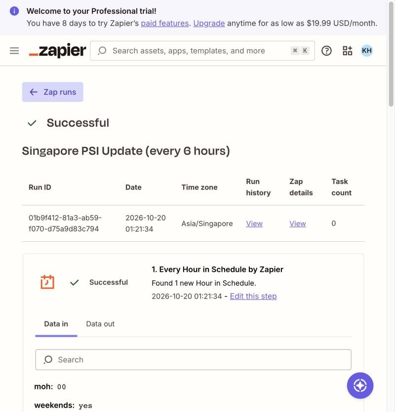
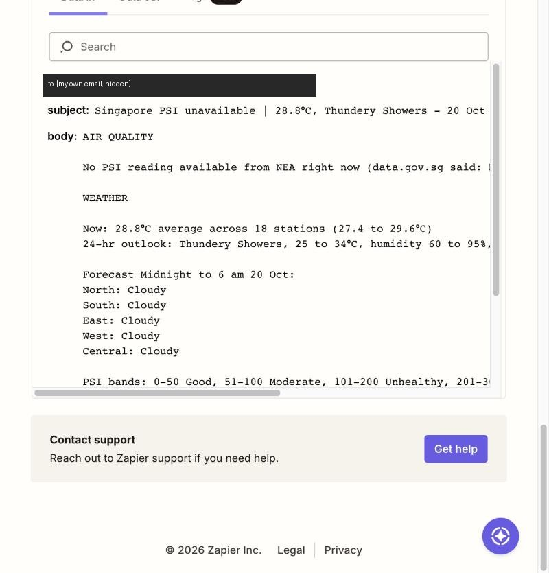
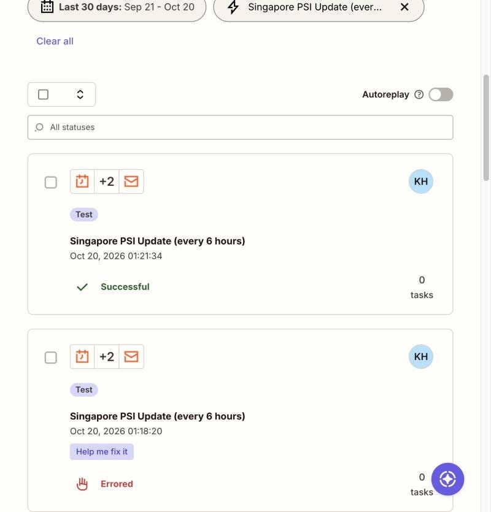
| Quadrant | A right answer? | Together or alone? | The person in the loop |
|---|---|---|---|
| A person leads, AI inside | A right answer | Must do it together | The person leads and AI works inside; the person signs off what AI has checked. |
| Agents run it, a person judges | No single right answer | Must do it together | Agents run the process, and a person judges inside it at the judgement points. |
| AI alone, with checks | A right answer | Either can do it alone | AI does it, with spot checks; a person reads its report or audits its log. |
| A person decides, AI alongside | No single right answer | Either can do it alone | A person decides with AI alongside, which drafts the options and checks the facts. |
AI alone, with checks (bottom left).
Work with a right answer. Every number in the email has a source of truth: NEA's published reading for that hour. I did not need any judgement to mark the emails right. For five scheduled runs, all 50 numbers matched NEA's record exactly. The labels are also fixed rules, not opinions: "Unhealthy" means PSI 101 to 200 on NEA's scale. Even the tricky case had a right answer: "there is no reading" is a fact, and after the fix the email says exactly that instead of guessing or going silent.
Work that either of them can do alone. I could look up the PSI and the forecast myself in a minute, and the Zap sent 24 scheduled emails with no person inside any run, with no approval step between the fetch and the email. Nothing in the job needs a person and AI working on the same item at the same time.
Where I stay at the gate: after the run, not before. Once a day I (1) check that the Zap is still on, (2) scan Zap history for anything Errored, because before the fix a missing feed produced no email at all, so my inbox alone could not show a failure, and (3) compare one email with NEA's figure for the same hour. What the agent may do alone: read three public, read-only NEA feeds, work out averages and the official bands, and email one fixed address, mine. What would move it: if it gave advice that depends on the person, such as "cancel the outdoor sports day" or "staff should work from home", the job would have no single right answer and would move to A person decides, AI alongside, with a manager making the call. If it sent haze alerts to other people (staff, parents or clients) who act on them, a wrong number would have a real cost, so I would sign off each alert before it goes out. That moves it to A person leads, AI inside.
Our group's board, AI Work Quadrants, places 28 tasks, seven in each quadrant. The tasks closest to mine sit in AI alone, with checks: Stocks · Pull daily closing prices ("a fixed, checkable fact" that a script fetches alone with a spot check against a second source) and Payments · Match payments to invoices. I agree, and my agent belongs beside them. Like a closing price, a PSI reading is a published fact that a script can fetch and a person can verify after the fact. My 50 of 50 matches with NEA are exactly that kind of spot check. I also agree with the group's top-right tasks, such as Stocks · Screen stocks for a watchlist and Student · Gather sources for a literature review, because there is no single right list and a person must judge inside the process.
Where I would answer differently is the together or alone question. The board treats "alone" as "no person needed inside each run", and stops there. My tricky case shows that "alone" still needs a named person outside the run: when NEA had no data, the agent could not notice, sent nothing, and the failure showed only in Zap history. So I keep my agent in "alone", but every task in that quadrant, mine and Pull daily closing prices alike, should name who checks that it is still running and not failing silently, not only that its answers are right.
I would also answer the right answer question differently for two of the group's top-left tasks. Product · Write release notes and Marketing · Translate a product page are placed as work with a right answer, but many versions of a release note or a translation are equally good, and choosing the wording and tone is a judgement. I would move them to the right-hand column. The same line applies to my own agent: its "Unhealthy" label is a right answer only because NEA fixes the bands. The moment it turns that into advice ("wear a mask today"), the right answer depends on the person (asthma, age, plans), and it would move to A person decides, AI alongside.
| What I delegated to AI | I used Claude and Zapier to build the Zap, Claude helped me write and test the JavaScript code step, add the weather, run the Step 2 checks, run the tricky case and the fix. I logged in to Zapier, chose the PSI idea, the 6-hour intervals and adding the weather feature. |
|---|---|
| What I checked, and how | Each version of the code was run against live NEA data before it went into Zapier, and the code in Zapier was compared character by character with the tested file. The filter was tested with real trigger records. The three emails were checked against NEA's historical API, and Zap history was scanned for errors. After the tricky case, the published code was checked to confirm it uses the live PSI request, not the test date. Email addresses are covered in every screenshot. |
| One AI error I caught | Claude's first filter used Zapier's "(Text) Is in" rule with "0,6,12". The filter test showed the 2 pm record would pass, because "Is in" matches text inside text, and "2" is inside "12". Published like that, the Zap would have emailed at 1, 2, 6 and 12 o'clock, am and pm, about eight emails a day, over Zapier's limit of 5. It was replaced with three "Exactly matches" rules joined by OR and tested again (2 pm blocked). A smaller one: the AI assumed midnight would show as hour "0", but a real record showed "12". That was harmless, because 12 was already allowed. |
| Time and cost | About 2 hours in total: I built the Zap on Wed 14 Oct, then added the weather and did the Step 2 checks, tricky case, fix and this page on Tue 20 Oct. Cash cost $0: Zapier's 14-day Professional trial, Vercel Hobby, GitHub Free and free NEA data, plus my existing Claude plan. Each emailed run uses 2 Zapier tasks. |
My agent was a good fit for the job: it just had to fetch official numbers on a set schedule and email them to me, and since every number can be checked against NEA’s website, it could do that without me stepping in. Where it fell short was when NEA had no PSI reading: the code broke, no email arrived, and because I wasn’t expecting anything, I wouldn’t have noticed that something had gone wrong; it also needed paid Zapier features, even though the brief asked us to stay on the free plan. If I did this again, I would keep the “PSI unavailable” email, add a simple daily check that the Zap is still running, and make sure my idea fits one trigger and one action on the free plan before I start building.